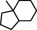

(aka MoFa - Molecular Fragment Miner)

Download page with most recent version.
This documentation refers to GUI version 2.5 (2011.02.24) and Miner version 6.2 (2011.02.24) of the MoSS program. Older versions of the program may differ in some aspects.


MoSS is mainly a program to find frequent molecular substructures and discriminative fragments in a database of molecule descriptions. It can be used in the context of drug discovery and synthesis prediction for the purpose of analyzing the outcome of screening tests.
However, since Miner version 5.3, MoSS is no longer restricted to molecular data sets, but can mine arbitrary data sets of attributed (or labeled or typed) graphs. The set of supported input formats for such general attributed graphs is currently still fairly limited, though, and they are not described in this documentation. In the following it is generally assumed that the input is a set of molecules.
Given a database of graphs, MoSS finds all (closed) frequent substructures, that is, all substructures that appear with a user-specified minimum frequency in the database (and do not have super-structures that occur with the same frequency). Alternatively, it finds molecular fragments that are frequent in the focus part of the database, but rare in the complement part, that is, that appear with at least a user-specified minimum frequency in the focus part of the database (and do not have super-structures that occur with the same frequency), but with no more than a user-specified maximum frequency in the complement part of the database. Such molecular substructures discriminate between the two parts of the database and thus may be called discriminative fragments.
The algorithm underlying MoSS is inspired by the Eclat algorithm for frequent item set mining [Zaki et al. 1997] (although it does not intersect transaction lists) and was first published in [Borgelt and Berthold 2002]. Apart from the default MoSS/MoFa algorithm, this program also contains the gSpan algorithm [Yan and Han 2002] (and its extension CloseGraph [Yan and Han 2003]) as a special processing mode.
The first version of the MoSS program was developed in cooperation with Tripos, Inc., Data Analysis Research Lab, South San Francisco, CA, USA. I am very grateful to Tripos, Inc., for giving me the opportunity to carry out the research that led to the development of this program.
The MoSS algorithm is currently also studied at the ALTANA Chair of Applied Computer Science (M.R. Berthold) of the University of Konstanz, where a sister page can be found.
Enjoy,
Christian Borgelt
| back to the top |

The MoSS program works on textual descriptions of molecules. In order to describe molecules by simple texts, so that they can be fed into a computer program, one needs a notation for the structure of a molecule. MoSS supports three such notation languages for molecules:
| Example: | ||
| SMILES: | c1:c:c(:c:c2:c:1C1C(CC2)C2C(CC1)(C(CC2)(O)C#C)C)O | |
| SLN: | C[1]H:CH:C(:CH:C[8]:C:@1C[10]HCH(CH2CH2@8)C[20]HC(CH2CH2@10)(C(CH2CH2@20)(OH)C#CH)CH3)OH |
Example data files can be found in the data directory of the source code package
MoSS can read and write all of the above description languages, but may make mistakes in interpreting certain codes in the SMILES format due to the fact that SMILES uses implicit single and aromatic bonds. A simple example illustrating the problem is the SMILES code c1ccccc1c2ccccc2 where the type of the bond between the two benzene rings, when considered locally, looks like aromatic instead of single, because it is implicit and the two adjacent atoms are aromatic (indicated by the lowercase letters).
Since version 6.5 MoSS tries to handle these cases by checking whether a bridge is labeled as an aromatic bond (which is clearly impossible) and changes all such bridges to single bonds. This approach helps in many cases (it helps for c1ccccc1c2ccccc2), but not necessarily in all. A problematic situation that can still be imagined is the SMILES code c12c(cccc2)c3c(cccc3)c4c1cccc4, where the middle ring, in order to satisfy valence rules, should not be aromatic, but would be interpreted by MoSS as such, because none of the implicit bonds connecting the three benzene rings is a bridge. Such misinterpretations can only be removed by including valence rules into the parser, which is a lot of tedious work I have not found time to do yet. (However, maybe I am wrong in my interpretation of this structure? Or maybe it is chemically impossible? I am not a chemist after all and the Daylight Renderer shows the middle ring as aromatic. There are also chemical compounds like Coronene, which look very similar and in which the valences also do not work out if one counts an aromatic bond as representing 1.5 electrons.)
To prevent such mistakes (or at least ambiguities) with certainty, it is therefore recommended to avoid implicit bonds, or at least to write molecules like the ones above as c1ccccc1-c2ccccc2 and c12c(cccc2)-c3c(cccc3)-c4c-1cccc4 in SMILES. (Note: the Daylight Renderer still shows the middle ring of the second structure as aromatic even for this SMILES code, which irritates me.)
MoSS output never contains implicit bonds: all bonds are stated explicitly to avoid such problems.
By default MoSS ignores hydrogen atoms (they are read, but the atoms are trimmed from the molecules before the search). It is possible to change this default, so that hydrogens are treated like all other atom types.
| back to the top |

The MoSS program comes in two flavors: one has a simple graphical user interface, which allows to set all parameters in a tabbed dialog box, while the other has to be invoked on the command line, providing the files to work on and the processing options as arguments to the program. This section describes the version with a graphical user interface, which may be easier to use for novice users. The command line version is described in the next section
The MoSS version with a graphical user interface can be started with the command
java -jar moss.jar [<config>]
for the Java archive (under Windows it may also be started by simply clicking on the file moss.jar) or
java moss.MoSS [<config>]
for the compiled source code (assuming in the latter case that the current working directory is the parent directory of the moss source directory, the CLASSPATH environment variable has been set appropriately, or a proper class path is set with the command line option -classpath (or -cp) of the java command). The only parameter, which is optional, is the name of a configuration file, from which the different fields in the dialog can be preset.
The dialog window contains a set of tabs, which can be selected from the list on the left and which are displayed on the right. In these tabs parameters and options can be set. At the bottom of the window is a bar of buttons, with which the search can be started, the program can be terminated, and the configuration of the dialog window can be saved and loaded.
Since it is inconvenient to set all needed parameters anew every time the MoSS program is started, it is possible to save the configuration of the dialog window to a file. To do so, simply press the Save button at the bottom of the window and select the file into which you want the configuration to be written. To load a configuration, press the Load button and select the configuration file to be loaded. Note that configuration files from different GUI versions may be incompatible.
After all parameters have been specified, the search can be started by pressing the Run button. While the search is running, the number of loaded graphs or the number of found substructures is printed in the status line (this number is updated once per second). The Run button changes into an Abort button, with which the search can be aborted. Note that in this case all substructures that were found up to this point have already been written to the output file and thus a (partial) result is available even in this case. At the end of a (not aborted) search a dialog box informs about the number of found substructures and the total search time.
On the first tab the input and output files and formats can be selected and a seed substructure, from which the search is to be started, may be specified:
By default, the SMILES format is used for all input and output and the names moss.dat and moss.sub are used for the molecule input file and substructure output file. The name of the molecule identifier file is left empty, indicating that this file will not be written. It is written only if the corresponding field is filled. Information about the format of the input and output files can be found here (input file) and here (output files).
By default, the seed is a star (or may also be left empty), meaning that the search is started from an empty substructure. In this case all possible atom types are tried as seeds one by one, starting with the type that is rarest in the given data set and proceeding to the more frequent ones.
On the second tab some basic parameters may be specified:
The input molecule data set is split into two subsets, which are called the focus and the complement. By default, all molecules which have an associated value no greater than 0.5 (the threshold for the split) are placed into the focus, all other molecules are placed into the complement. This division into focus and complement may be inverted by checking the "Invert split" box.
The next fields allow to constrain the substructures that are reported by their size, which is measured by the number of nodes/atoms that are contained in a substructure. If the maximal size is 0, this means that substructures of arbitrary size may be reported. Restricting the (maximum) substructure size is not recommended for novice users, as this can have surprising horizon effects.
One may specify to exclude certain node/atom types from the search (meaning that no substructures containing them are to be reported). They can be listed in the next input field and have to be specified as a molecule, using the notation language that was specified for the seed structure (see first tab). The bonds that are used to specify the molecule are ignored. Nevertheless it may be best to use the null bond "." for all bonds.
Finally, node/atom types that should not be considered as seeds (when searching without an explicit seed) can be listed. These types are not generally excluded from the search, as they may appear with other seeds. It is guaranteed that only substructures that consist exclusively of the node/atom types listed here (and no other types) will be discarded.
To be more precise, the program works like this: if no explicit seed is given, all possible single node/atom seeds are tried, in the order of increasing frequency of the node type in the given database. That is, the least frequent node type/chemical element (that exceeds the minimum support) is used as the first seed. After this seed has been processed, this node type/chemical element is removed from all graphs/molecules, thus ensuring that future frequent substructures will not contain this chemical element. Then the second least frequent node type/chemical element is used as a seed and afterwards removed from the graphs/molecules etc. until the most frequent node type/chemical element (usually carbon) is reached.
If a chemical element is to be excluded as a seed, it is moved to the end of the sorted list of node types/chemical elements (that is, to where the most frequent types/elements are), regardless of its frequency in the database, but it is not processed as a seed. This scheme guarantees that only substructures that consist of no other types/elements than those excluded as seeds are suppressed and hence leads to a strictly controlled loss of results. Especially suppressing substructures that consist solely of carbon atoms or solely of carbon and oxygen atoms (oxygen is usually the second most frequent chemical element) can considerably speed up the search.
On the third tab all support related parameters can be specified:
In the first two fields it can be specified what minimum support a substructure must have in the focus and what maximum support it may have in the complement in order to be reported. Both values are usually given in percent of the size (number of molecules or number of nodes, depending on the support type) of the respective subset. That is, the minimal support in the focus is the percentage of graphs/molecules in the focus set, the maximal support in the complement the percentage of graphs/molecules in the complement set. Hence the bases for the percentages are different and therefore they cannot be compared directly. Alternatively, the support thresholds may be specified as absolute numbers of graphs/molecules, namely by checking the "Absolute support" box.
The standard choice for the support of a substructure is the number of database graphs/molecules that contain it. However, one may also choose to compute it as the size of a maximum independent set of the (normal or harmful) overlap graph of the embeddings of the substructure. With these support definitions it is possible to find frequent subgraphs in a single large graph, see [Fiedler and Borgelt 2007]. Since the problem of finding a maximum independent node set of a graph is NP-complete, it is usually not advisable to use an exact algorithm, since it can be very slow (even though this depends heavily on the structure of the overlap graph). Therefore the default is to use a greedy algorithm, which most of the time yields a result that differs only very slightly from the exact result, if at all.
Reporting only closed substructures is a lossless way of reducing the size of the output. A substructure is called closed if no supergraph of it has the same support. However, this restriction is currently only possible if the support of a substructure is the number of containing graphs. For all other support types all frequent substructures are reported.
The options on the fourth tab control how atoms and bonds are matched (all of the options on this tab have an effect only if the database consists of molecules - they are ignored for general attributed graphs):
By default, aromatic bonds are treated as an extra type, but they may also be downgraded (that is, treated as equivalent to single bonds) or upgraded (that is, treated as equivalent to double bonds). The type of bonds is usually taken into account, but it may be ignored in rings or even for all bonds. Similarly, the type of atoms (chemical element) is usually taken into account, but it may be ignored in rings or even for all atoms. Other properties of atoms that may be matched (apart from their type, i.e., chemical element) are their charge and their aromaticity (i.e., whether they are part of an aromatic ring, which is determined by checking whether they are incident to an aromatic bond). Note that in order to be able to ignore the atom type or the bond type in rings, ring bonds must be distinguished from other bonds (see next tab).
On the fifth tab parameters connected to ring and chain extensions can be specified:
There are two different representations of aromatic rings, namely using actual aromatic bonds or so-called Kekulé representations, which use alternating single and double bonds. Since this is, of course, a hindrance to matching aromatic rings, it is recommended to convert Kekulé representations to actual aromatic bonds. Deactivate this option only if you know what you are doing. (Note that this option has an effect only if the database contains molecules.)
It can be useful to distinguish bonds in rings from other bonds, namely if one wants to be sure that a bond in a fragment is either a ring bond or a non-ring bond in all supporting molecules (and not a ring bond in some, but a non-ring bond in others). To distinguish ring bonds from other bonds, a range of ring sizes (measured as the number of bonds of the ring) has to be specified, since only rings in the specified range will actually be considered as rings. For most chemical applications a range from 5 to 6 bonds is best.
Ring extensions can be very useful if one is not interested in fragments that contain only part of a ring. There are three flavors to do this, which differ only in the efficiency of the search, not in the result. Usually full ring extensions are by far the fastest method and it is therefore recommended to use them, if any. (Note that distinguishing ring bonds from other bonds also has an effect if ring extensions are not used.)
Finding variable length carbon chains can be useful if one is interested in considering substructures as equivalent that only differ in the length of carbon chains between their parts. (Note that this option has an effect only if the database contains molecules.)
The sixth tab contains miscellaneous options that control the search carried out by the program and how it is pruned. These options are important for an expert user only:
The options on this tab do not affect the output of the program (provided there is no bug), but only affect the performance in terms of execution time and memory usage. It is recommended not to change the default settings. Explanations about the extension types and most of the pruning methods can be found in [Borgelt et al. 2004] and [Borgelt 2005].
The seventh tab contains options that concern the treatment of substructure embeddings. They can help to save memory, but usually increase the processing time:
All of these options are important if the program runs out of memory on a large dataset. In such a case setting a small maximal number of embeddings per graph/molecule and unembedding siblings of currently processed search tree nodes can considerably reduce the amount of memory needed. In extreme cases one may try to abandon embeddings altogether (specify to use embeddings from level -1, which means not at all). However, all of these options increase the processing time, usually in direct relation to the memory saved.
The eighth tab contains debugging options, which, under normal conditions, are not relevant to a standard user, but provide means to find bugs in the program.
Normalizing the output makes it possible to check whether two found substructures are identical by simple string matching. This can help to detect differences in the output of different algorithm variants.
With verbose message output the program prints the nodes of the search tree that is traversed. Each node is described by the fragment corresponding to it and a list of database graphs in which it is contained (together with the number of embeddings in this graph if embeddings are used). Since search trees can become very large and the list of containing database graphs can be very long for standard data sets, this option should be activated only for very small data sets.
The last tab only states the version of the MoSS program, and provides contact and license information:
| back to the top |

The general form of invoking the command line version of the MoSS program is:
java -cp moss.jar moss.Miner [options] <in> [<out>] [<ids>]
for the Java archive or
java moss.Miner [options] <in> [<out>] [<ids>]
for the compiled source code (assuming in the latter case that the current working directory is the parent directory of the moss source directory or that the CLASSPATH environment variable has been set appropriately).
The meaning of the arguments is:
| <in> | is the input file with the molecular/graph database to analyze. It is expected to be in the format described here. This argument is mandatory. |
| <out> | is the output file to which the found substructures are written, together with some additional information about them. By default (i.e., if no output file name is given) this file will be named "moss.sub". The format of this file is described here. |
| <ids> | is the output file to which lists of containing graphs/molecules are written for each found substructure. It is optional and is not written if no file name is provided for it. The format of this file is described here. |
The possible options, by which the search can be controlled, are described in the next section. If MoSS is invoked without any arguments, it prints a list of possible options together with a short description of their meaning.
| back to the top |

MoSS supports a variety of options, with which the search for frequent substructures can be controlled. For the command line version, these options may be specified in any place on the command line (before, between, or after the normal program arguments). In the graphical user interface, which is described here, these options are specified in the dialog window.
Format Options control the format of the molecule descriptions for the seed and in the input and output files (see Molecule Description Languages).
| -i# | input data format (default: smiles) |
| -o# | substructure output format (default: smiles) |
| -f# | seed format (line notation) (default: smiles) |
Possible formats include smiles and smi for the SMILES format, sln for the SLN format, ctab, mdl and sdf for the SDfile format, linog and lng for the LiNoG (Linear Notation for Graphs) format and finally list, nelist and nel for the node/edge list format. Unfortunately the last two formats, which allow processing arbitrary graphs, are not yet described in this documentation. However, the source package contains example input files in these formats (see the directory moss/data).
Seed Option is used to specify the seed structure to start the search from.
| -j# | seed structure to start the search from |
By default it is expected to be in SMILES format, but this may be changed with the option -f#. If this option is not given, an empty seed is used.
Exclusion Options allow to restrict the set of node/atom types (chemical elements) that are considered in the search
| -x# | node types to exclude (as a graph in seed format, default: H) |
| -y# | seed types to exclude (as a graph in seed format, default: none) |
Split Options control how the graph/molecule database is split into the focus part and the complement part.
| -t# | threshold value for the split (default: 0.5) |
| -z | invert split (> versus <= instead of <= versus >) |
If one does not want to find discriminative fragments, the complement part should be empty. This can be achieved by specifying a threshold that is larger than any value associated with a molecule in the database.
Size Options control the size a substructure must have in order to be reported.
| -m# | minimum size of a substructure (default: 1) |
| -n# | maximum size of a substructure (default: no limit) |
Support Options control the minimum frequency for the focus and the maximum frequency for the complement with which a substructure must occur in order to be reported.
| -s# | minimum support in focus (default: 10.0%) |
| -S# | maximum support in complement (default: 2.0%) |
| -k# | support type (1:MIS, 2:HO, 3:MNI) (default: 0:graphs) |
| -G | do not use greedy algorithm for MIS computation (slower) |
| -C | do not restrict the output to closed substructures |
Note that the support values are interpreted as percentages (of the number of graphs or the total number of nodes, depending on the chosen support type) if they are positive and as absolute numbers if they are negative.
Details about other support types than the number of containing graphs/molecules can be found in [Fiedler and Borgelt 2007].
Matching Options control how atoms and bonds in the molecules are matched by substructures. In particular, they control which atom and bond types are seen as equivalent.
| +/-a | match/ignore aromaticity of atoms (default: ignore/-) |
| +/-c | match/ignore charge of atoms (default: ignore/-) |
| +/-d | match/ignore atom type (default: match/+) |
| +/-D | match/ignore atom type in rings (default: match/+) |
| +/-: | upgrade/downgrade aromatic bonds (default: extra type) |
| +/-b | match/ignore bond type (default: match/+) |
| +/-B | match/ignore bond type in rings (default: match/+) |
An atom is aromatic if it is part of an aromatic ring. Downgrading an aromatic bond means treating it as a single bond, upgrading means treating it as a double bond. The option -B only has an effect if rings are marked with the option -r (see below) and then only for the marked rings.
Ring Mining Options lead to rings (or at least ring bonds) being treated differently from other bonds. In addition, they allow switching to extensions by full rings rather than individual bonds in one step (see [Hofer et al. 2004] and [Borgelt 2006]).
| -K | do not convert Kekulé representations to aromatic rings |
| -r#:# | mark rings of size # to # bonds (default: no marking) |
| -R | extend with rings of marked sizes (default: indiv. bonds) |
| -E | bond-by-bond support-filtered ring extensions (includes -O) |
| -O | do not record fragments with open rings of marked sizes |
In a Kekulé representation an aromatic ring has alternating single and double bonds. In order to avoid mismatches due to a different representation of aromatic rings it is recommended to convert all Kekulé representations to rings with aromatic bonds.
Carbon Chain Option allows to find and match chains of varying length that consist only of carbon atoms that are connected by single bonds and do not have any branches.
| -H | find and match variable length chains of carbon atoms |
Extension Options switch between different restricted extensions that are used in the search. Details about restricted extensions can be found in [Borgelt 2005].
| -g | use rightmost path extensions (default: max. source) |
Rightmost path extensions are the extension type used in the gSpan algorithm [Yan and Han 2002] and its extension CloseGraph [Yan and Han 2003]. Hence, by specifying -g one can switch to these algorithms. The MoSS/MoFa algorithm, which is the default, uses maximum source index extensions, see [Borgelt 2005].
Pruning Options control the pruning of the search tree. The default is usually the best choice. For details about the pruning methods, see [Borgelt 2005] (canonical form pruning) and [Borgelt et al. 2004] (other pruning methods).
| +/-P | partial perfect extension pruning (default: no/-) |
| +/-p | full perfect extension pruning (default: yes/+) |
| +/-e | equivalent sibling pruning (default: no/-) |
| +/-q | canonical form pruning (default: yes/+) |
| +/-h | filter extensions with orbits (default: yes/+) |
If canonical form pruning is not used, duplicate substructures are found and eliminated with the help of a repository of already processed substructures.
Embedding Options control how the embeddings of substructures are handled during the search.
| -u# | use embeddings only from level #
(default: use always) (< 0: do not use embeddings at all, 0: use always) |
| -M# | maximal number of embeddings per molecule (to save memory) |
| -U | unembed siblings of current search tree node (to save memory) |
These options can reduce the amount of memory needed in the search, but usually slow down the search process. Not using embeddings at all is advantageous if the graph data set contains (very) few labels.
Debug Options have been introduced for debugging purposes, but may also be useful for testing the program and understanding how the algorithms work.
| -N | normalize fragment output form (for result comparisons) |
| -v | verbose output during search (show search tree) |
| -T | do not print search statistic |
Conversion Options allow to convert data files between different formats. If any of them is given, no substructure search is carried out.
| -l | do not search, only convert input to the output format |
| -L | do not search, only convert input to a logic format |
| back to the top |

The input file, which contains the molecular database, is expected to be either an SDfile or a text file with one graph/molecule description per line. In the latter case each graph/molecule is described by an identifier, a value that is used for classifying the graph/molecule into the focus or the complement part of the database, and a description of the graph's/molecule's structure, using either the SMILES or the SLN format (see Molecule Description Languages) or the LiNoG or NEList formats (for general graphs).
The first line of such an input file may be
id,value,description
This line may be present or absent (automatically checked).
Each (following) line of the input file has the general format
<id> , <value> , <desc>
where
| <id> | is a graph/molecule identifier that may be any string, provided it does not contain a comma, a space, or a tabulator (which are interpreted as field separators). The graph/molecule identifier is used to refer to graphs/molecules in the output of the program and thus it is recommended that it is unique for the database to analyze. However, the program does not require nor check uniqueness and will work also if the same identifier is used twice or even more often. |
| <value> | is a real value that is compared to a user-specified threshold in order to split the database into a focus part and its complement. By default, all molecules with a value <= 0.5 are placed into the focus, all other molecules are placed into the complement. This behavior can be changed with the options -t# (threshold value) and -z (invert split), see Options. |
| <desc> | is a description of the graph/molecule in a linear notation language. Currently the SMILES format and the SLN format are supported (see Molecule Description Languages) as well as the LiNoG and the NEList format for general graphs. By default the SMILES format is used, but this may be changed using the option -i# (see Options). |
Instead of commas, spaces and tabulators may also be used to separate the three fields. This implies that the molecule identifier must not contain spaces or tabulators, since otherwise an input line cannot be split correctly into the three fields.
Empty lines in the input file are simply ignored, as well as lines starting with a hash symbol '#', which may be used to put comments into an input file.
If the input is an SDfile, the field name "value" is used to find and read the value that is associated with each graph and which is used to split the database into a focus part and a complement part.
| back to the top |

MoSS writes one or two output files, depending on how many file names were provided on the command line: a substructure file (always written) and an graph/molecule identifier file (optional).
The substructure output file contains the found substructures. This file may either be an SDfile or a text file with one substructure per line, together with some additional information. Each found substructure is described by six fields.
The first line of such an output file is always
id,description,nodes,edges,s_abs,s_rel,c_abs,c_rel
which indicates the meaning of the fields in the following lines.
Consequently the following lines have the general form
<id> , <desc> , <nodes> , <edges> , <s_abs> , <s_rel> , <c_abs> , <c_rel>
| <id> | is an identifier for the substructure, which is a simple consecutive number, starting with 1 for the first substructure. Note that the order in which substructures are reported depends on the search process and may differ depending on the selected search mode. |
| <desc> | is a description of the substructure in either SMILES or SLN format (see Molecule Description Languages) or LiNoG or NEList formal (for general graphs). By default SMILES is used, but this may be changed using the option -o#. |
| <nodes> | is the number of nodes/atoms of the substructure. |
| <edges> | is the number of edges/bonds of the substructure. |
| <s_abs> | is the absolute support of the substructure in the focus part of the database, that is, the number of graphs/molecules in the focus part that contain this substructure. |
| <s_rel> | is the relative support of the substructure in the focus part of the database, that is, the percentage of graphs/molecules in the focus part that contain this substructure. |
| <c_abs> | is the absolute support of the substructure in the complement part of the database, that is, the number of graphs/molecules in the complement part that contain this substructure. |
| <c_rel> | is the relative support of the substructure in the complement part of the database, that is, the percentage of graphs/molecules in the complement part that contain this substructure. |
If the output file is an SDfile, the support information is stored together with the field name "support", in two lines: one for the support in the focus (first the absolute support, than the relative supprt) and one for the support in the complement (ditto).
The molecule identifier output file contains, for each found substructure, a list of the graphs/molecules the substructure is contained in. Each line corresponds to one substructure, which is referred to by its identifier (see above). The containing graphs/molecules are also referred to by their identifiers as they were specified in the input file (see Input File).
The first line of such an identifier file is always
id:list
Each line of this output file has the general format
<subid> : <graphid> [ , <graphid> ]*
where
| <subid> | is the identifier of a substructure as it is specified in the substructure output file, that is, a number between 1 and the number of found substructures. |
| <graphid> | is the identifier of a graph/molecule that contains the substructure as it was specified in the input file. |
The order in which the graphs/molecules are listed is the same as the order in the input file, with the only exception that the graphs/molecules in the focus part of the database precede the molecules in the complement part.
| back to the top |

As a first example of how to apply the MoSS program, we consider the artificial data set used in [Borgelt and Berthold 2002], which consists of six simple molecules. (Note that these molecules were constructed to demonstrate certain properties of the search algorithm and have no chemical significance, may not even be possible as actual molecules.)
| id | molecule | SMILES description |
|---|---|---|
| a | CCS(O)(O)N | |
| b | CCS(O)(C)N | |
| c | CS(O)(C)N | |
| d | CCS(=N)N | |
| e | CS(=N)N | |
| f | CS(=N)O |
This data set can be found on the download page for the MoSS program and in the source package (directory moss/data). It is available in both SMILES and SLN format.
For the SMILES format, the file is called example1.smi and looks like this:
a,0,CCS(O)(O)N b,0,CCS(O)(C)N c,0,CS(O)(C)N d,0,CCS(=N)N e,0,CS(=N)N f,0,CS(=N)O
For the SLN format, the file is called example1.sln, and it looks the same, since I omitted hydrogen atoms and thus there is no difference in this case between the two description languages.
The first column states the identifiers of the molecules, which are simply the letters a to f. The value associated with each molecule (second column) is 0, so that by default all molecules are placed into the focus part of the database while the complement part is empty.
We now process the file in SMILES format with the graphical user interface. To do so, select example1.smi as the "Molecule input file", example1.sub as the "Substructure output file", and example1.ids as the "Molecule identifier file" (all on first tab). Then go to the "Support" tab and set the minimum support in the focus to 50%. Finally go to the "Search & Pruning" tab and check "Verbose message output". Then press the Run button at the bottom of the dialog window.
To process the file in SMILES format with the command line version, use the command
java -cp moss.jar moss.Miner -s50 -v -jS example1.smi example1.sub example1.ids
The option -s50 means that a substructure has to be contained in at least 50% of the molecules (that is, in 3 molecules) in order to be reported. The option -v enables us to inspect the search tree that is traversed. The first argument, "S", specifies that the search should be started from a sulphur atom, which is contained in all molecules. example1.smi obviously is the input file with the database to process. example1.sub is the name of the output file to which the found substructures are to be written, examples2.ids the name of the output file, to which the lists of molecule identifiers are to be written.
Running the MoSS program from the graphical user interface or invoking it with the above command line yields the following terminal output:
moss.Miner - molecular substructure miner (MoSS) version 6.2 (2011.02.24) (c) 2002-2011 Christian Borgelt parsing seed description ... [1 atom(s), 0 bond(s)] done. parsing excluded atom types ... [1 atom(s)] done. reading molecules ... [6 (6+0) molecule(s)] done [0.002s]. marking bridges ... [6 molecule(s)] done [0.0s]. masking atom and bond types ... [6 molecule(s)] done [0.0s]. preparing/recoding molecules ... [6 molecule(s)] done [0.001s]. embedding the seed ... [6 (6+0) molecule(s)] done [0.006s].
After having loaded the data file, but before starting its actual work, MoSS performs several preprocessing tasks, the progress of which is reported as show above. Then the actual search starts. Since we specified the option -v the search tree is printed to the terminal:
searching for substructures ...
S abcdef (6)
S-C ab2c2def (6)
S(-O)-C a2b2c2f (4)
S(-O)(-N)-C a2b2c2 (3)
S(-N)-C ab2c2de (5)
S(-N)-C-C abd (3)
S(-C)=N def (3)
S-C-C abd (3)
[6 substructure(s)] done [0.01s].
Each line refers to one node of the search tree, with the indentation indicating the level of the search tree the node is located on. The line starts with a description of the substructure (which is always in SMILES format), followed by a list of identifiers of the molecules that contain the substructure. If a molecule contains the substructure more than once, the number of occurrences of the substructure in the molecule is printed after the molecule identifier. At the end of the line the number of molecules containing the fragment is printed in parentheses.
After the MoSS program finishes the search, it prints the number of found substructures as well as some statistics about the search (in the terminal window):
search statistics: maximum search tree height : 3 number of search tree nodes : 8 number of created fragments : 21 number of created embeddings : 84 insufficient support pruning : 10 perfect extension pruning : 1 equivalent sibling pruning : 0 canonical form pruning : 0 ring order pruning : 0 duplicate fragment pruning : 0 non-closed fragments : 2 fragments with open rings : 0 fragments with invalid chains: 0 auxiliary invalid fragments : 0 accesses to repository : 0 comparisons with fragments : 0 actual isomorphism tests : 0 comparisons with embeddings : 0
These statistics give an impression of the complexity of the search and of how effective the different pruning methods are.
The first output file written by the above execution of the MoSS program is the substructure file example1.sub. It looks like this:
id,description,nodes,edges,s_abs,s_rel,c_abs,c_rel 1,S(-O)(-N)-C,4,3,3,50.0,0,0.0 2,S(-O)-C,3,2,4,66.666664,0,0.0 3,S(-N)-C-C,4,3,3,50.0,0,0.0 4,S(-N)-C,3,2,5,83.333336,0,0.0 5,S(-C)=N,3,2,3,50.0,0,0.0 6,S-C,2,1,6,100.0,0,0.0
It lists the six closed substructures that were found, which are depicted in the table below.
| id | fragment | SMILES description |
|---|---|---|
| 1 | CS(O)N | |
| 2 |  | CSO |
| 3 | CCSN | |
| 4 | CSN | |
| 5 | CS=N | |
| 6 | CS |
Note that, for example, O-S-N is not reported, since it is not closed (the superstructure C-S(-O)-N has the same support).
The second output file (that is, example1.ids) lists the molecules each found substructure is contained in. It looks like this:
1:a,b,c 2:a,b,c,f 3:a,b,d 4:a,b,c,d,e 5:d,e,f 6:a,b,c,d,e,f
It tells us, for example, that substructure 1 (that is, S(-O)(-N)-C) is contained in the molecules a, b, and c and that substructure 5 (that is, S(-C)=N) is contained in the molecules d, e, and f.
| back to the top |

The steroids data set consists of 17 molecules, each of which has at least 4 rings. These molecules, which are shown in the table below, provide an excellent test data set for ring mining.
| id | molecule | SMILES description |
|---|---|---|
| a | c1:c:c(:c:c2:c:1C1C(CC2)C2C(CC1)(C(CC2)(O)C#C)C)O | |
| b | c1:c:c(:c:c2:c:1C1C(CC2)C2C(CC1)(C(CC2)O)C)Br | |
| c | c1:c:c(:c:c2:c:1C1C(CC2)C2C(CC1)(C(CC2)O)C)F | |
| d | c1:c(:c(:c:c2:c:1C1C(CC2)C2C(CC1)(C(CC2)(O)C#C)C)O)OC | |
| e | c1:c(:c(:c:c2:c:1C1C(CC2)C2C(CC1)(C(CC2)O)C)O)OC | |
| f | c1:c(:c(:c:c2:c:1C1C(CC2)C2C(CC1)(C(CC2)O)C)OC)OC | |
| g | c1:c(:c(:c:c2:c:1C1C(CC2)C2C(CC1)(C(C(C2)O)O)C)O)OC | |
| h | c1:c(:c(:c:c2:c:1C1C(CC2)C2C(CC1)(C(=O)CC2)C)O)OC | |
| i | c1:c(:c(:c:c2:c:1C1C(CC2)C2C(CC1)(C(CC2)O)C)OC)O | |
| j | c1:c:c(:c(:c2:c:1C1C(CC2)C2C(CC1)(C(CC2)O)C)OC)O | |
| k | C1CC(CC2(CCC3C(C12C)CCC1(C23C(C(C1C1=COC(=O)C=C1)OC(=O)C)O2)C)O)O | |
| l | c1:c:c(:c:c2:c:1C1C(CC2)C2C(CC1)(C(CC2)O)C)O | |
| m | c1:c:c(:c:c2:c:1C1C(CC2)C2C(CC1)(C(CC2)O)C)OC | |
| n | c1:c:c(:c:c2:c:1C1C(CC2)C2C(CC1)(C(C(C2)O)O)C)O | |
| o | c1:c:c(:c:c2:c:1C1C(CC2)C2C(CC1)(C(=O)CC2)C)O | |
| p | C1CC(=O)C=C2CCC3C(C12)CCC1(C3CCC1(OC(=O)C)C#C)C | |
| q | C1C(N2(C)CCCCC2)C(OC(=O)C)CC2C1(C)C1C(C3C(C)(CC1)C(C(N1(CCCCC1)C)C3)OC(=O)C)CC2 |
This data set can be found on the download page for the MoSS program and in the source package (directory moss/data). It is available in both SMILES and SLN format. We process this dataset in two ways, both times using the ring mining capabilities of the MoSS program.
In the graphical user interface we set in both cases the "Molecule input file" in the first tab to steroids.smi and the "Substructure output file" to steroids.sub. In addition, we set the minimal support in the focus (second tab) to 100% (that is, substructures must be contained in all molecules), switch on full ring extensions on the fourth tab, and specify a ring size range from 5 to 6 bonds. All other fields keep their default setting. The search is stated by pressing the Run button.
Alternatively, we may use the command line
java -cp moss.jar moss.Miner -s100 -r5:6 -R steroids.smi steroids.sub
By this we try to find all substructures that are contained in all of the molecules (minimum support = 100%, option -s). Rings of sizes 5 and 6 atoms (option -r) are marked, and extensions leading into rings add the whole ring in one step, not just individual bonds (option -R). After the program terminates, the file steroids.sub looks like this:
1,O-C,2,1,17,100.0,0,0.0 2,C12(-C(-C-C-C-2)-C-C-C-C-1)-C,10,11,17,100.0,0,0.0
These substructures are depicted in the table below.
| id | fragment | SMILES description |
|---|---|---|
| 1 | OC | |
| 2 |  | C12(C(CCC2)CCCC1)C |
Maybe it is surprising that the second fragment consists only of two rings, since there is a third 6-bond ring, which is attached to 6-bond ring in the fragment, and which looks (at first sight) the same in all fragments. However, this is not the case, as is explained below.
In a second run, we set (in addition to the settings described above) "Ignore bond type" on the "Matching" tab of the graphical user interface to "in rings" and run the program again.
Alternatively, we may use the command line
java -cp moss.jar moss.Miner -s100 -r5:6 -R -B steroids.smi steroids.sub
which differs from the first run only in the additional option -B. It instructs the program to ignore the bond type within (marked) rings. This call yields the output
1,O-C,2,1,17,100.0,0,0.0 2,C12(-C(-C-C-C-2)-C2-C(-C-C-1)-C1-C(-C-C-2)-C-C-C-C-1)-C,18,21,17,100.0,0,0.0
in the file steroids.sub. The found substructures are depicted in the table below.
| id | fragment | SMILES description |
|---|---|---|
| 1 | OC | |
| 2 | C12(C(CCC2)C2C(CC1)C1C(CC2)CCCC1)C |
As can be seen, the second found substructure contains the third and the fourth ring, which are present in all molecules, but differ slightly. For the fourth ring (on the right) this is obvious, since it is an aromatic ring in most molecules, but not in molecules k, p, and q. However, this also leads to a difference in the third ring, since the bond that is shared by the third and fourth ring is an aromatic bond if the fourth ring is aromatic, but only a single bond in the three other cases.
Note that in this case the second substructure cannot be found in exactly this form in all fragments, but only approximately. Nevertheless it can be useful and may provide a deeper insight into the structural properties of the molecules in the dataset.
Note also that in the first run the part of the third ring that is identical in all molecules (all bonds with the exception of the one that is shared by the third and fourth ring) is not part of the fragment, because ring mining requires that a ring must be present as a whole. Since the ring cannot be closed in the same way in all molecules, it has to be left out completely. If, however, ring mining is deactivated (by not specifying the option -R or by setting "Ring extensions" to "none") these common ring bonds will be part of a found fragment, which then contains a partial ring.
| back to the top |

Details about the algorithm underlying the MoSS program can be found in these papers:
| back to the top |

Download page with most recent version.
| back to the top |

(MIT license, or more precisely Expat License; to be found in the file mit-license.txt in the directory moss/doc in the source package, see also opensource.org and wikipedia.org)
© 2002-2014 Christian Borgelt
Permission is hereby granted, free of charge, to any person obtaining a copy of this software and associated documentation files (the "Software"), to deal in the Software without restriction, including without limitation the rights to use, copy, modify, merge, publish, distribute, sublicense, and/or sell copies of the Software, and to permit persons to whom the Software is furnished to do so, subject to the following conditions:
The above copyright notice and this permission notice shall be included in all copies or substantial portions of the Software.
THE SOFTWARE IS PROVIDED "AS IS", WITHOUT WARRANTY OF ANY KIND, EXPRESS OR IMPLIED, INCLUDING BUT NOT LIMITED TO THE WARRANTIES OF MERCHANTABILITY, FITNESS FOR A PARTICULAR PURPOSE AND NONINFRINGEMENT. IN NO EVENT SHALL THE AUTHORS OR COPYRIGHT HOLDERS BE LIABLE FOR ANY CLAIM, DAMAGES OR OTHER LIABILITY, WHETHER IN AN ACTION OF CONTRACT, TORT OR OTHERWISE, ARISING FROM, OUT OF OR IN CONNECTION WITH THE SOFTWARE OR THE USE OR OTHER DEALINGS IN THE SOFTWARE.
| back to the top |

| E-mail: |
christian.borgelt@softcomputing.es christian@borgelt.net | |
| Snail mail: |
Christian Borgelt Intelligent Data Analysis and Graphical Models Research Unit European Centre for Soft Computing Edificio Cientifico-Tecnológico, 3a Planta c/ Gonzalo Gutiérrez Quirós s/n E-33600 Mieres Asturias, Spain | |
| Phone: | +34 985 456545 | |
| Fax: | +34 985 456699 |
| back to the top |

| back to the top |